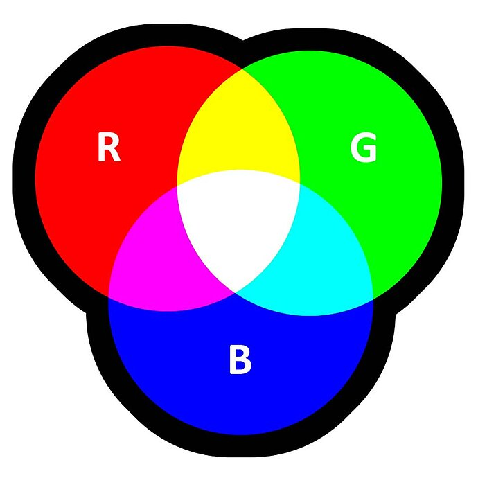

kleurmodellen systemen die kleuren definiëren en weergeven voor digitale en gedrukte
media, met RGB (Rood, Groen, Blauw) voor schermen en CMYK (Cyaan, Magenta, Geel, Key/Zwart)
voor drukwerk als de meest voorkomende

RGB is een additief model waarbij kleuren lichter worden door meer licht toe te voegen, terwijl
CMYK een subtractief model is waarbij kleuren donkerder worden
door meer pigmenten te combineren.
RGB (rood, groen, blauw)
Toepassing:
Dit model wordt gebruikt voor digitale beeldschermen,
zoals computers, tv's en telefoons.
Werking:
Het is een additief model, wat betekent dat de primaire kleuren (rood, groen, blauw) worden samengevoegd om
andere kleuren te creëren. Zwart is de basiskleur (een uitgeschakeld scherm) ,en door licht toe te voegen,
worden de kleuren lichter en gaan ze richting wit.
Kenmerken:
Kleuren worden vaak als feller en intensiever ervaren dan bij CMYK.